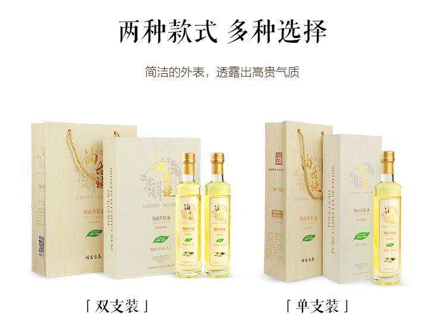
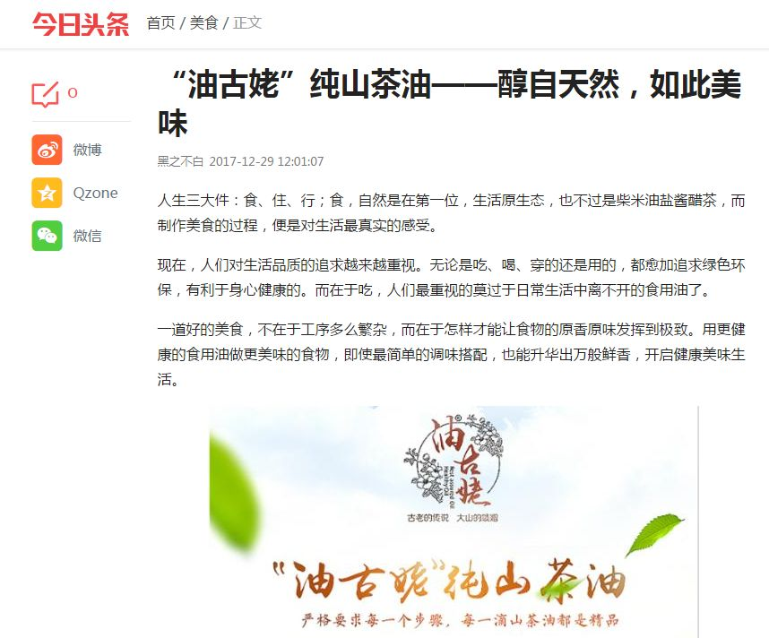

-
第48届美博会 引领美业新趋势再展花间里品牌实力
此次展会规模仅次于意大利COSMOPROF美容展，展览规模是亚洲之best，全球第二。这场美丽盛会以无限精彩，吸引着全球美容化妆品行业人士的目光。
2018-03-13 16:29:33

-
女神节，遇见最美的你
人间三月，桃之夭夭、灼灼其华。在鲜花盛开的时节，最具代表性的节日就属3.8“女神节”了。
2018-03-08 11:05:09

-
山茶油厉害了，2018“油”你真好
近期，湖南卫视播出的《天天向上》节目中，关晓彤、易烊千玺等明星与营养健康专家李定文教授，展开了“橄榄油VS山茶油，哪种油更健康养生？”的话题讨论。
2018-02-22 14:55:48
-
2018国际中国公益事业大典
2018年1月20日，“2018国际中国公益事业大典”在北京星光大道演播厅开幕。当晚，备受瞩目的公益大典如期举行，在部分政界领导、中国公益届先锋人物、领军人物、各大公益基金会负责人、国际公益组织、商界领袖、主流媒体等各界代表见证活动正式拉开序幕
2018-02-21 17:23:37
-
百强女性领导力
近年来，有关女性领导力话题的讨论渐成趋势，应该说这是一个喜人的现象。一方面，这一话题的流行，标志着女性在商业世界与社会活动中起到了越来越重要的作用，另一方面也说明了即使在今天这个高度开明的时代，人们对女性走上领导者位置仍旧持有一定的怀疑
2018-01-23 14:56:33

-
明昌集团董事郑晓辉先生参加2017•深圳‘一带一路’投资合作国际行及深港企业家联谊会
2018年1月19日，明昌集团董事郑晓辉先生应邀参加2017中国•深圳“‘一带一路’投资合作国际行”年会，暨2017深港企业家联谊会在五洲宾馆召开
2018-01-23 13:55:24
-
2018深圳招牌菜美食节！
各位亲们，这两天寒风不是凛冽，在这不下雪又暖和，冰冷的雨水拍不到脸上，深圳冬季一言难尽的时节里，美食 治愈了我们的胃和心灵
2018-01-22 17:21:18

-
爆！爆！爆！“油古姥”纯山茶油众筹已突破110万！
近些年，食用油消费量是呈现逐年上升的趋势，茶油的市场需求越来越旺盛，山茶油的发展前景被业内人士看好，山茶油作为...
2018-01-10 18:04:58
-
【苏宁众筹】明昌生态“油古姥”纯山茶油正式上线
我们期待已久的【苏宁众筹】明昌生态“油古姥”纯山茶油项目正式上线了
2018-01-10 12:04:58
 -
“油古姥”纯山茶油--醇自天然，如此美味
近些年，食用油消费量是呈现逐年上升的趋势，茶油的市场需求越来越旺盛，山茶油的发展前景被业内人士看好，山茶油作为...
2018-01-10 09:58:11
